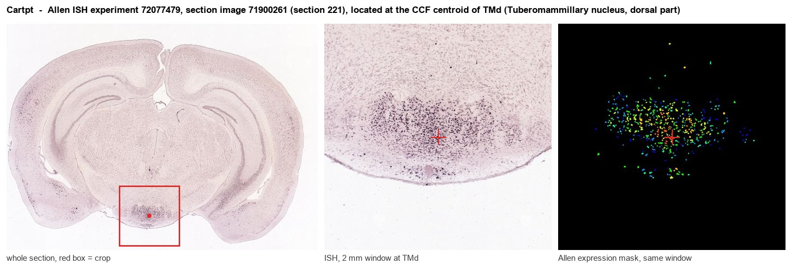
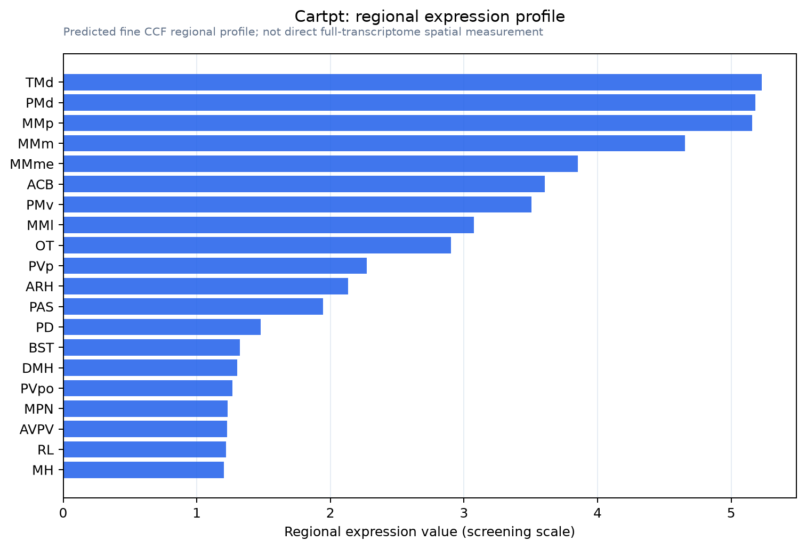

Cartpt
Spatial tier: RESTRICTED · Class: OTHER · Top region: TMd (Tuberomammillary nucleus, dorsal part) · Positive regions: 13/554
45.8Discovery Score
43.8Targetability Score
CEvidence grade C
What this means: Cartpt: fine CCF profile is restricted toward TMd (top regions: TMd, PMd, MMp, MMm, MMme; 13 positive regions); direct spatial validation is still required.
Function in TMd: evidence, prediction, innovation
- Gene function
- Cartpt encodes the CART prepropeptide, processed into CART(55-102) and related fragments. CART is an anorexigenic neuropeptide expressed widely in hypothalamus and brainstem that reduces food intake, modulates reward and stress responses, and is co-expressed with POMC in arcuate neurons. Its receptor remains unsettled, although GPR160 has been proposed.
- Region function
- The dorsal tuberomammillary nucleus is part of the posterior hypothalamic histaminergic cell group, the brain's sole source of histamine; its neurons fire fastest during waking, fall silent in REM sleep, and stabilise arousal and attention.
- Published in this region
- expression only No functional study of CART in the tuberomammillary nucleus exists. The closest evidence is anatomical: Bäckberg 2002 and Bäckberg 2003 chemically characterised posterior hypothalamic populations, mapping CART-immunoreactive neurons and their orexin-receptor and GABA-B receptor content across the region containing the histaminergic field, and Yoshikawa 2021 reviews the tuberomammillary histamine neurons themselves as the wakefulness control centre.
- Predicted function
- Prediction: CART released in or by dorsal tuberomammillary cells would most plausibly act as a co-transmitter linking energy state to histaminergic arousal, so that negative energy balance or stress tunes the wake-promoting output of histamine neurons. Intra-tuberomammillary CART(55-102) is predicted to increase waking and food-anticipatory arousal; conditional Cartpt deletion restricted to Hdc-expressing neurons should blunt the normal rise in wakefulness during fasting and food anticipation without much changing baseline sleep architecture.
- Innovation
- ★★★★☆ 4/5 CART is well studied in arcuate feeding circuits but never as a histaminergic co-transmitter, and Cart-Cre crossed to Hdc-Cre tools make the experiment straightforward.
- Tools
- Cart-IRES-Cre (JAX 028533) and Cartpt knockout mice; CART(55-102) peptide; validated anti-CART antibodies (Phoenix); histaminergic neurons targetable with Hdc-Cre (JAX 021198) and Hdc knockout mice.
- References
Direct evidence located at the region

Allen ISH experiment 72077479, section image 71900261 (section 221): the section that contains the CCF centroid of Tuberomammillary nucleus, dorsal part according to the Allen image-to-atlas alignment (reference_to_image), with a 2 mm window around that point. Left: whole section, red box = window. Middle: ISH signal. Right: Allen's expression-mask view of the same window. open this image in the Allen viewer
Look it up yourself: Allen Mouse Brain ISH for CartptAllen reference atlas: TMd (structure 1126)ABC Atlas MERFISH viewer(in the ABC Atlas choose dataset MERFISH-C57BL6J-638850-CCF, colour cells by gene "Cartpt" or by parcellation_substructure "TMd")All genes confined to TMd + 3-D brain
Direct spatial evidence
MERFISH REGION LOCATOR

Regional expression figure

Predicted WMB × fine-CCF profile; not direct full-transcriptome spatial measurement.
Spatial profile
Evidence and specificity
- Evidence status
- PREDICTED_FINE
- Direct sources
- None; predicted localization only
- Exclusive threshold
- 12 positive regions out of 554
- Spatial specificity
- 0.357
- Top-region fraction
- 0.066
- Filter status
- PASS
Interpretation limits
- Cell-type-to-region projection is imputed expression, not direct spatial measurement.
- Adult reference atlases do not establish stability across age, sex, strain, state, or disease.
- Transcript abundance does not guarantee protein abundance or genetic-tool performance.